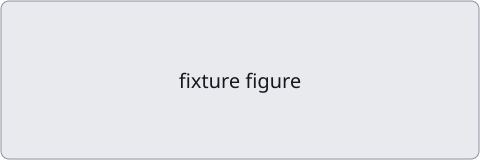

类 am 夹具报告
这是一份模仿 answer-me-with-html 页面结构的夹具：右上角工具栏、阅读路径和带锚点的面板。
阅读路径
总览
这是一段足够长的正文段落，用来在手机与桌面上检查报告外壳不会改动报告自身的排版，也不会遮住正文。
这是一段足够长的正文段落，用来在手机与桌面上检查报告外壳不会改动报告自身的排版，也不会遮住正文。

发现
这是一段足够长的正文段落，用来在手机与桌面上检查报告外壳不会改动报告自身的排版，也不会遮住正文。
- 这是一段足够长的正文段落，用来在手机与桌面上检查报告外壳不会改动报告自身的排版，也不会遮住正文。
- 这是一段足够长的正文段落，用来在手机与桌面上检查报告外壳不会改动报告自身的排版，也不会遮住正文。